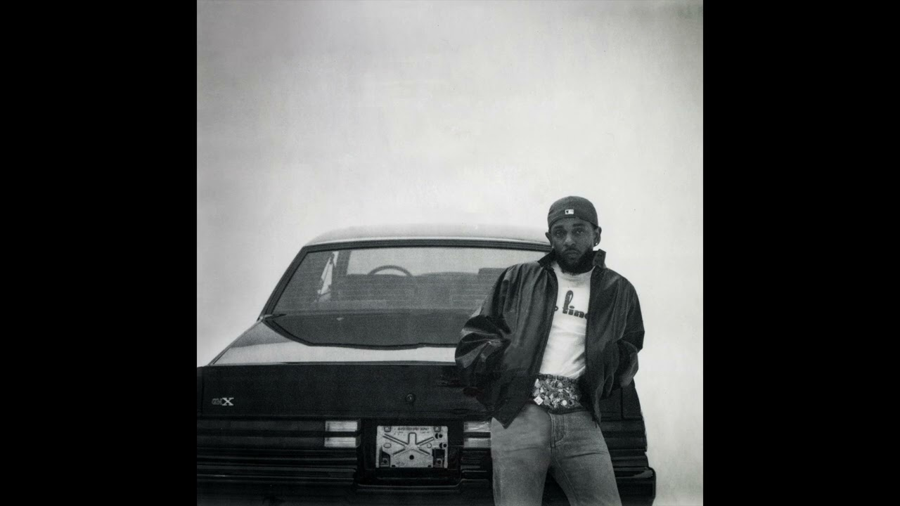

Ο Kendrick Lamar Duckworth (γεννημένος στις 17 Ιουνίου 1987) είναι Αμερικανός ράπερ και τραγουδοποιός. Θεωρούμενος ως ένας από τους πιο σημαντικούς καλλιτέχνες hip-hop της γενιάς του και ένας από τους μεγαλύτερους ράπερ όλων των εποχών, είναι γνωστός για την τεχνική του καλλιτεχνία και τη σύνθετη σύνθεση τραγουδιών. Του απονεμήθηκε το Βραβείο Πούλιτζερ για τη Μουσική 2018, και έγινε ο πρώτος μουσικός εκτός των ειδών της κλασικής και της τζαζ που έλαβε την τιμή.
ΜΕΓΑΛΥΤΕΡΟΙ ΔΙΣΚΟΙ ΤΟΥ KENDRICK LAMAR

GNX

good kid, m.A.A.d city

To Pimp A Butterfly